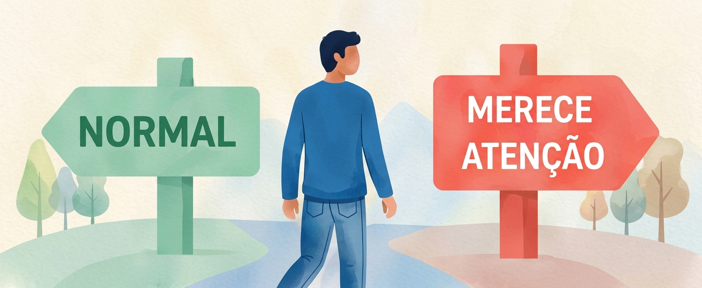

Quando ansiedade começa a interferir na vida?
Veja como identificar os sinais de que a ansiedade pode estar causando sofrimento e prejuízo no dia a dia.
Ler mais →Entenda o que é ansiedade, como ela se manifesta, quando pode se tornar um problema, o que pode contribuir e quais são os caminhos de cuidado. Conteúdo baseado em evidências e revisado por profissional de saúde mental.

Ansiedade em 1 minuto
Entenda o essencial de forma simples.Assista a um resumo rápido e confiável sobre o que é ansiedade, quais são os principais sintomas e quando procurar ajuda.
A ansiedade é uma resposta natural do organismo diante de situações que percebemos como desafiadoras ou ameaçadoras. Ela faz parte da experiência humana e, em muitos casos, pode ser útil.
Nem sempre. A ansiedade pode ser esperada em situações específicas. Ela se torna um sinal de preocupação quando é intensa, frequente, persistente e começa a interferir na sua rotina e qualidade de vida.

Esses termos se relacionam, mas não são a mesma coisa. Cada um tem características diferentes e ajuda a entender melhor o que você está sentindo.
A ansiedade pode aparecer de diferentes formas, envolvendo o corpo, os pensamentos, as emoções e os comportamentos.
Veja como identificar os sinais de que a ansiedade pode estar causando sofrimento e prejuízo no dia a dia.
Ler mais →A ansiedade costuma ser multifatorial. Conheça os principais fatores que podem influenciar.
Ler mais →Em alguns casos, a ansiedade pode surgir mesmo sem um gatilho claro. Entenda por quê.
Ler mais →Entenda os principais transtornos e como eles se diferenciam.
Ler mais →A avaliação considera a sua história de vida, o contexto em que os sintomas aparecem e o impacto deles na sua rotina, até chegar ao exame que determine a ansiedade.
Ler mais →Sim. Existem diferentes abordagens de tratamento, incluindo a psicoterapia e, em alguns casos, o uso de medicamentos, sempre com avaliação profissional.
Ler mais →A psicoterapia oferece um espaço seguro para compreender o que você está vivendo, desenvolver estratégias de enfrentamento e cuidar da sua saúde mental. Existem diferentes abordagens, e a escolha depende das suas necessidades e do trabalho conjunto com o profissional.
Trabalha a relação entre pensamentos, emoções e comportamentos, ajudando a identificar e modificar padrões que alimentam a ansiedade.
Ajuda a lidar com pensamentos e sensações difíceis com mais flexibilidade, agindo de acordo com seus valores.
Busca compreender a experiência da pessoa em seu mundo, seus sentidos e escolhas.
Foca na busca de sentido e na responsabilidade diante da própria vida.
Explora conflitos, histórias e dinâmicas emocionais que podem estar relacionados ao sofrimento.
Considere buscar um psicólogo quando a ansiedade for frequente, intensa, difícil de controlar ou estiver afetando o trabalho, os estudos, o sono e os relacionamentos.